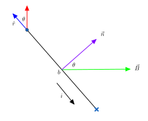

The magnetic force on a particle of charge \(q\) and velocity \(\vec{v}\) experiencing a magnetic field \(\vec{B}\) is $$\vec{F_B} = q\vec{v} \times \vec{B}.$$ The magnitude of the force is thus \(|q|vB\sin\theta.\) The magnetic field lines are drawn from the northm pole to the south pole. Opposite poles attract and like poles repel. Right hand rule 1. Point your thumb in the direction the positively charge particle (or current) is moving and point your fingers in the direction of the magnetic field. Then your palm points in the direction of the resulting magnetic force.
Thomson's experiment involved crossed fields, i.e. where an electric field and magnetic field are perpendicular to each other. Say \(\vec{e}\) is down the page and \(\vec{B}\) is into the page. Suppose a particle is shot with velocity \(\vec{v_x}\) perpendicular to both fields. Over a distance \(L\), the deflection due to \(\vec{E}\) is $$y = \frac{qEL^2}{2mv_x^2}.$$ In order for the magnitudes of the magnetic and electric forces on the particle to cancel, we require $$E = vB \qquad \text{ or } \qquad v = \frac{E}{B}.$$ Combining these equations we have $$\frac{m}{q} = \frac{(BL)^2}{2yE}.$$Thus we can compute the mass-to-charge ratio for moving charged particles.
Suppose we have a conducting sheet with current \(i\) (heading down the page), length \(l\), and width \(d\), and we place it into an external, uniform magnetic field into the page. An electric drifts upwards the page with speed \(v_d\) and experiences a magnetic force \(\vec{F_B}\) to the right. After some time, enough electrons accumulate on the right side of the sheet to form a potential difference (Hall potential: \(V = Ed\)) and thus an electric field strong enough that we reach equilibrium. If charge carriers in the sheet were positive, the left side would have the low potential and the right side the high potential. Because this isn't the case, we can conclude charge carriers are negative. In equilibrium, \(eE = ev_dB.\) Recalling \(v_d = \frac{J}{ne}= \frac{i}{nAe},\) we have \(\frac{V}{d} = \frac{i}{nAe} B.\)Hence $$n = \frac{iB}{eV} \frac{d}{A} = \frac{iB}{elV}.$$Thus, we can measure the number of charge carriers per unit volume. Finally, suppose we move the plate in the direction of \(-\vec{v_d}\), increasing the speed until the net velocity of the electrons is 0. Then, \(F_B=0\), so the Hall potential will be 0. Thus we can measure drift velocity.
We can find the magnetic field at a point \(P\) due to a current via $$\mathrm{d}\vec{B} = \frac{\mu_0}{4\pi} \frac{i \mathrm{d}\vec{s} \times \hat{r}}{r^2}$$ where
First recall that \(v = r\omega\) and the centripetal acceleration is \(a_c = r\omega^2 = \frac{v^2}{r}\) [we can derive this by considering \(\vec{r}(t) = r\langle \cos\theta, \sin \theta \rangle\) and using the fact that \(\omega = \frac{\mathrm{d}\theta}{\mathrm{d}t}\)]. A particle in a uniform magnetic field experiences a force \(F_B = |q|v_{\perp}B = ma_c,\) which implies $$|q|B = \frac{mv_{\perp}}{r}$$(\(v_{\perp}\) is the speed of the particle's velocity perpendicular to \(\vec{B}\)). We have \(T = \frac{2\pi r}{v_{\perp}} = \frac{2\pi m}{|q|B}\) and we can find \(f = \frac{1}{T}\) and \(\omega = 2\pi f\).
A cyclotron consists of two hollow D-shaped conductors, called dees, separated by a small distance (if the open ends of the dees were shoved together we'd have a hollow disc). An oscillator is attached to the dees to allow the potential sign of the dees (and hence the direction of the electric field) to alternate back and forth. These dees are then immersed in a uniform magnetic field. If a proton were inserted at the center, it would be initally accelerated into one of the dees. Once inside the dee, it experiences no electric force (\(E\) is zero inside a conductor), it only experiences the magnetic force which causes it to circle back into the gap. By alternating \(E\) at the correct frequency (so it changes direction each time the proton re-enters the gap), we can continually accelerate the particle. Since \(r = \frac{mv}{qB},\) we require \(f_{\mathrm{osc}} = \frac{1}{T} = \frac{qB}{2\pi m}.\) Because the particle spirals outward as it's speed increases, to achieve large speeds we need a large cyclotron. Moreover, due to relativistic effects, the frequency of revolution is not independent of \(v\) at high speeds. Thus, a cyclotron is inadept at achieving speeds greater than \(0.1c\). A synchrotron however varies \(B\) and \(f_{\mathrm{osc}}\) over time, so the particle travels in a circular path.
Note \(q = it = i\frac{L}{v_d}\), so \(F_B = qv_d B \sin\theta = iLB\sin\theta.\) Therefore, $$\mathrm{d}\vec{F_B} = i\mathrm{d}\vec{L} \times \vec{B}.$$ For two parallel wires, $$F = i_b L B = \frac{\mu_0 L i_ai_b}{2\pi d}.$$Note antiparallel currents are attractive, whilst parallel currents repel.
Suppose we have a loop of wire of length \(a\) and width \(b\) in a constant, uniform magnetic field from left-to-right across the page, as in the figure below. The normal to the plane of a loop is given by curling the fingers of your right hand in the direction of the current.  Let \(\theta\) be the angle between \(\vec{n}\) and \(\vec{B}\). Note: the net force on the loop due to the magnetic force on the length \(b\) sections of wire is zero. The magnetic force on the upper length \(a\) section is up the page and on the lower section it is down the page. Hence a net torque is present on the wire, \(\tau_{\mathrm{net}} = 2\tau_{\mathrm{upper}}.\) SInce \(\tau_{\mathrm{upper}} = Fr\sin\theta = (iaB)\frac{b}{2}\sin \theta\), it follows $$\tau = iabB\sin\theta.$$ Note \(\vec{n}\) will tend to align with \(\vec{B}\). For a flat coil (turns have approx. same dimensions and lie in a plane) \(\tau_{\mathrm{coil}} = (Nia)B\sin\theta.\) We define the magnetic dipole moment of the coil \(\vec{\mu} = NiA\hat{n}\) where \(\hat{n}\) is the unit normal to the plane of the coil. Then we can write $$\vec{\tau}= \vec{\mu}\times \vec{B} \quad \text{ and } \quad U(\theta) = -\vec{\mu}\cdot \vec{B}.$$
By convention, we assign signs to the current directions by curling the fingers of our right hand around the loop in the direction of integration; the thumb points in the direction of positive current. $$\oint \vec{B} \cdot \mathrm{d}\vec{s} = \mu_0 i_{\mathrm{enc}}.$$